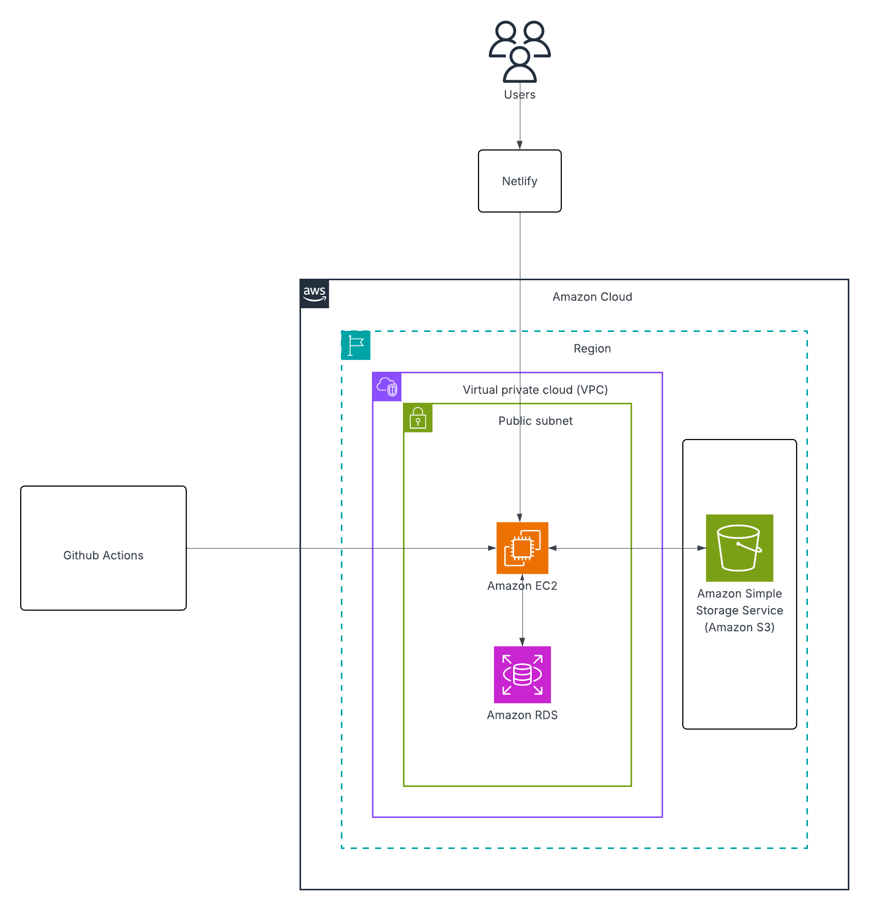

Architecture Diagram (AWS Specific)
The AWS architecture of the Grocery Delivery Website shows how the platform is securely deployed and managed within the AWS cloud infrastructure.
When a Buyer or Seller accesses the website, their requests are handled through the AWS environment hosted within a Virtual Private Cloud (VPC) for improved security, network control, and isolation.
Key AWS Components

Key AWS Components
Amazon EC2 (Elastic Compute Cloud)
Hosts the backend (Node.js + Express) and serves API requests from the frontend within a secure VPC environment.
Amazon RDS (Relational Database Service)
Stores all structured data like users, products, carts, and orders using PostgreSQL with automatic backups.
Amazon S3 (Simple Storage Service)
Stores and retrieves product images securely via presigned URLs generated by the backend.
GitHub Actions (CI/CD)
Automates code deployment and updates to EC2, ensuring smooth builds and continuous delivery.
Security & Network Overview
All services run inside a VPC with restricted access via security groups, while IAM roles manage permissions between EC2, RDS, and S3.
Summary
This AWS setup provides a secure, scalable, and efficient environment for the Grocery Delivery Website, enabling seamless performance for both buyers and sellers.